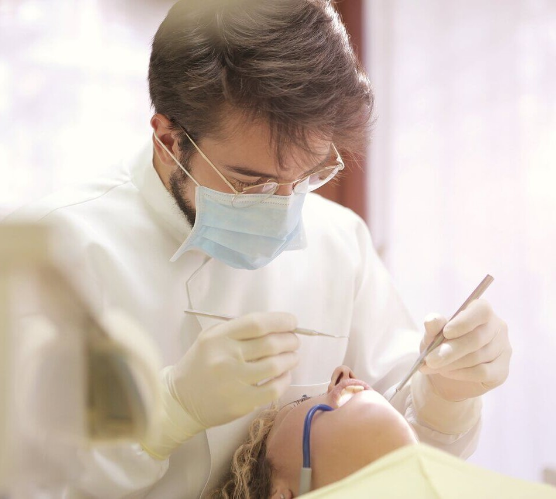

Division Street Dental
Dr. Ron McHargue
Quality, compassionate care

Meet the Doctor

Dr. Ron McHargue
Dentist
I grew up in Moses Lake, so coming home to care for the people and community I know so well was natural for me. My parents owned B & S small engine repair, so every day after school you could find me there, working alongside my father and helping the family run the business. After graduating Moses Lake High School, I attended Big Bend community College where I met my beautiful wife, Lacey. I then transferred to Washington State University to complete my undergraduate degree, followed by the move to the big city of Seattle to attend the University of Washington School of Dentistry, one of the top ranked dental schools in the nation. I chose the career of dentistry because it combines my love of the sciences, my ability to work well with my hands and my desire to work with people. I love how technical dentistry is and how it challenges me, not to mention the feeling I get when I am able to help someone get out of pain or improve their life by giving them a beautiful smile. I was one of nine students hand picked to pilot a new program called R.I.D.E that allowed me to gain some practical experience working in clinics for the six months before I graduated. I was lucky enough to be able to do that here at the Moses Lake Community Health Center, giving me a great jump start and helping me to graduate with about 3 times as much clinical experience as a normal dental student. Since graduating I worked for a short time at the Community Health Center and Job Corp. I am so happy to be back in my hometown and look forward to meeting you. I am lucky enough to be married to my wife, Lacey, for 16 years and have three beautiful little girls and one rowdy boy. In my free time I enjoy spending time with family, running, basketball and thinking of fun things to keep my family entertained.
Meet the Staff

Amy
Dental Hygienist
If you need your smile to shine, Amy can help you with that. She is welcoming and friendly and will get you smiling your brightest.

Harper
Scheduling Coordinator
The first welcoming smile you will see. She operates our front desk so chances are if you give us a call she will be the cheerful voice on the other end. She is great at helping you schedule your appointments, answer questions, billing, and anything else you might need.

Donna
Dental Assistant
Anytime you see Dr. McHargue, this lady will be beside you and keeping you comfortable during your stay. She is great at answering questions and will assist during your treatment. She will also take x-rays, ask you about your medical history and take your blood pressure.